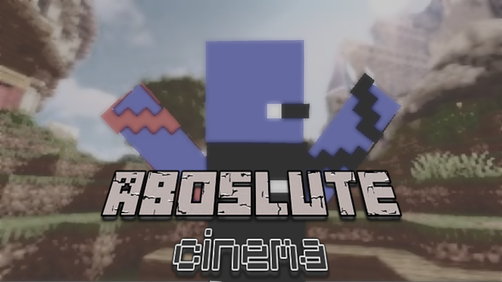

I'm a Minecraft Player hehehehe.
Currently learning web development and programming. I have a passion for playing video games and creating videogames related stuffs. Feel free to explore this portfolio that Ive been working on.
I am planning to keep posting on my Youtube Channel but currently focusing more on pragramming cause my device cant handle making videos. So I'm just making projects like this to build my programming skill.
I'm usually active on CraftersMC, if you want to contact me, you can check me out on the CraftersMC discord server.
No published projects yet.
Today is 2-17-2026 this is a documentary, today this doc......
Today I finished the first version of this portfolio, although i still have no....